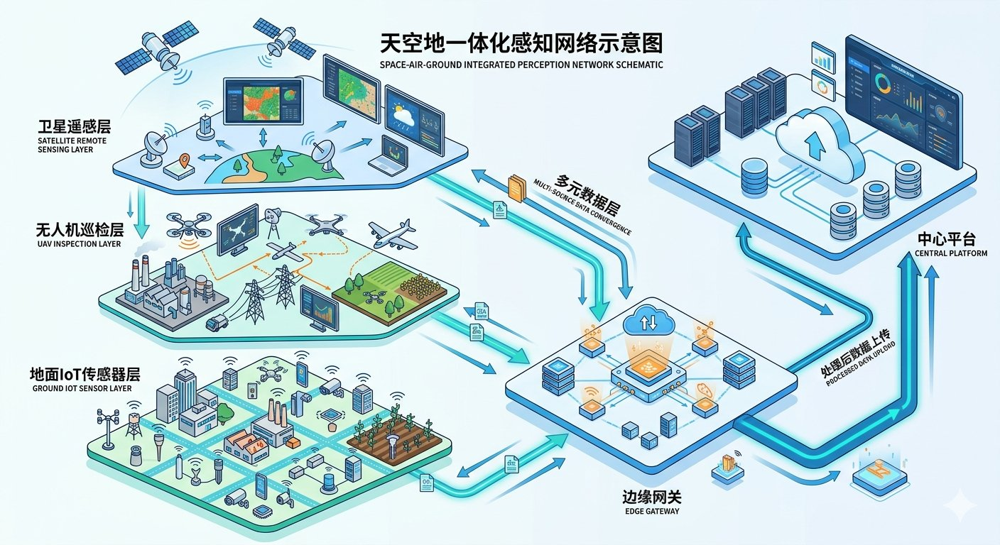
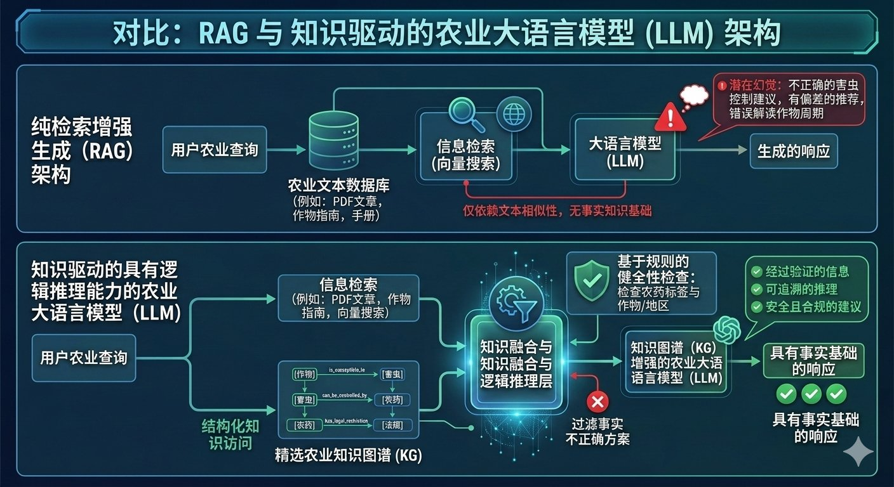
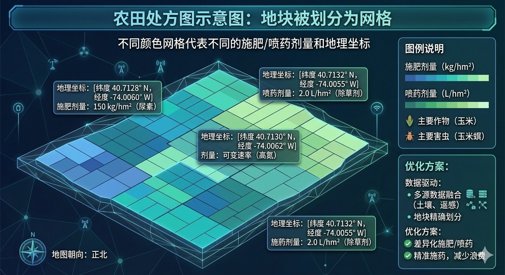
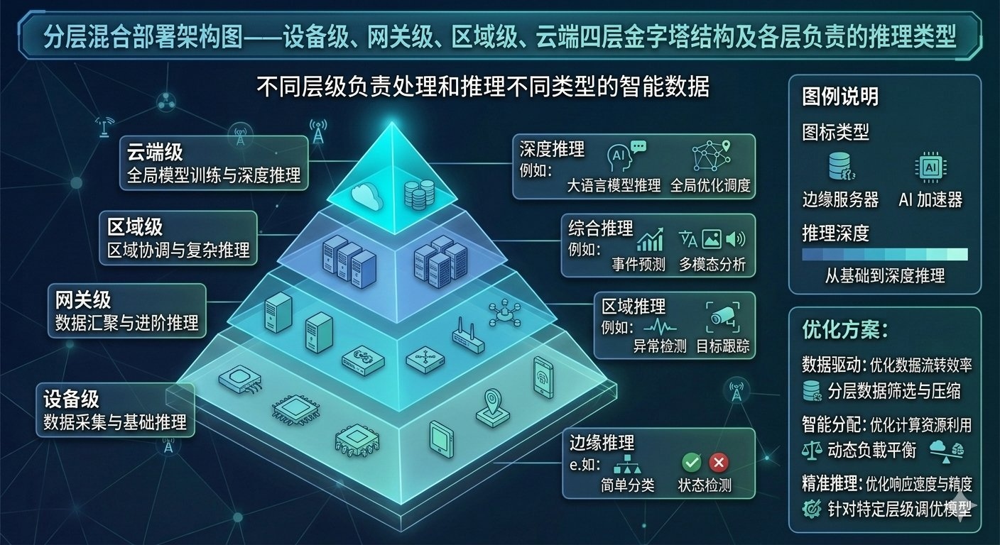

2026年5月17日，北京，农业人工智能发展大会的开幕会上演了一场无声的审判。
华南农业大学的邓小玲教授站在台上，投影仪打出一张荔枝果实的特写照片。她先让通用大模型识别——模型自信地给出了一个错误答案，把"妃子笑"认成了另一个品种。接着她又问病害防治建议，通用模型的回答笼统得像百度百科："注意通风、合理施肥、及时喷药。"然后她切换到荔知君大模型——同一个问题，模型准确判别了品种，并且给出了分发病时期的具体措施、用药量和喷施次数。
同一个会场的另一个角落，北京佳格天地发布了知天世界大模型。这个拥有5亿参数的地球视觉基础大模型，用30米网格划分地球，处理了2013年至2023年间累计420万张中分辨率全球场景影像，能够理解地表四季更替、植被变化、作物生长及城市扩展等动态。
两场演示放在一起，暴露了一个被大多数人忽略的关键分野：农业LLM的竞争，早已不在"模型参数谁更大"这个维度上。真正的分水岭是——你把LLM当成一个会说话的聊天机器人，还是当成一个能闭环做决策的田间引擎。
前者在会议室里演示很惊艳，后者才能真正下田。
感知层：多模态融合不是"把图片转成文字喂给LLM"
智慧农业的数据输入从来就不是纯文本。卫星遥感影像、无人机航拍图、地面IoT传感器、气象站数据、农户语音描述——这些异构数据源构成了农业决策的原材料。但绝大多数农业AI系统的第一个架构错误，就是把所有这些数据粗暴地转成文本描述，然后丢给LLM做推理。
这种做法的问题在复杂农业场景里会被指数级放大。中山大学在2026年3月发表的一篇论文提出了一个精准的概念：现有农业多模态大模型普遍存在"地面中心偏见"（terrestrial-centric bias）。它们几乎只依赖近距离地面图像做微观诊断，但现代精准农业 fundamentally 运行在宏观尺度上——需要无人机从空中捕捉地块级作物动态，需要卫星监测大范围灌溉格局。当模型只能"蹲下来看叶子"，却理解不了"这片500亩地的整体长势分布"时，它的决策视野是残缺的。
AgroNVILA的解决方案是感知-推理解耦架构（PRD）。输入图像先经过一个冻结的视觉编码器压缩成视觉token序列，然后架构把后续处理明确分叉为两个阶段：感知阶段注入宏观空间上下文，解决不同尺度之间的歧义；推理阶段用强化学习对齐专家农业逻辑，防止统计捷径。实验结果显示，这种架构在多海拔农业推理任务上的准确率比传统方案提升了15.18%。
知天世界大模型的做法则是另一条路径——用自研的GAGO时空数据架构处理六个波段的遥感数据，以30米网格为最小单元理解地表动态。它不依赖单一图像输入，而是构建了一个持续更新的时空数据立方体：每个网格点在时间轴上累积历史观测，在空间轴上与相邻网格保持地理连续性。这种设计让模型在做产量预估时，不是只看"今年这片地长得怎样"，而是能关联"过去十年同期、同纬度、同土壤类型的地块表现"。
对于工程落地来说，感知层的核心挑战可以归纳为三个问题。第一，时空对齐——卫星今天拍的数据、无人机昨天拍的图像、土壤传感器实时读数，它们的时间基准和空间坐标系并不天然一致。你需要一个统一的数据预处理管道，做时间戳归一化、坐标投影转换、分辨率重采样。第二，模态鸿沟——视觉特征和数值特征在语义空间里的分布完全不同，简单拼接token会让模型"看不懂"。第三，带宽约束——田间网络条件参差不齐，原始遥感影像动辄几百MB，不可能每次都全量上传到云端。
潍柴雷沃的智慧农业管理平台给出的工程答案是"天空地"一体化感知网络。卫星提供大范围周期性监测，无人机在关键节点做高精度巡检，地面传感器网络作为神经末梢持续回传微观数据。三层数据在边缘网关做初步融合，只把浓缩后的特征和异常事件上传中心平台。这套系统服务面积已突破1000万亩，实践测算显示可实现作物增产10%、节省种子5%、减少化肥与农药使用各10%、节约农业用水50%。

认知层：为什么RAG不够，还需要知识图谱
农业是LLM幻觉问题最严重的领域之一，没有之一。
原因很直接。第一，农业知识极度依赖时空上下文——同一种病害在北方5月爆发、在南方3月爆发，同一块地在旱年和涝年的施肥策略完全不同。第二，区域差异巨大——山东的小麦种植经验不能直接套用到甘肃定西，品种、土壤、气候、耕作习惯全变了。第三，错误决策的代价是整季收成，没有Ctrl+Z。
AgriRAG在CVPR 2026 Workshop上发表的论文给出了一个令人警醒的数据对比。在农业病害诊断任务上，纯零样本的视觉语言模型准确率只有43.5%。加入RAG检索增强后，准确率飙升到83.7%——提升了40.2个百分点。这个增幅本身就说明：农业视觉推理的性能驱动因素不是参数规模，而是检索质量。研究使用的Qwen3-VL-8B模型，在4-bit量化后仅需12GB显存，在一台消费级RTX 4070 Ti上就能运行，性能却逼近GPT-4o的86.2%。
但RAG在农业场景里有其天然的结构性缺陷。传统RAG依赖向量相似度检索，它擅长找"提到相同关键词"的文档片段，却不理解"这些片段之间的因果关系"。你问"为什么这块地小麦叶片发黄"，RAG可能检索到"氮素缺乏会导致叶片发黄"和"锈病会导致叶片发黄"两个片段，然后让模型自己猜是哪一个——猜错了就是一场误诊。
哈工大在《智慧农业》期刊上发表的KGLLM给出了更精确的解法。它的核心洞察是：不是所有检索到的知识都有用，需要过滤。研究团队用信息熵评估引入每条知识前后模型输出的确定性变化——如果一条知识不能降低输出熵（也就是不能让模型更确定），就把它过滤掉。经过筛选的知识路径再被用来调整词表概率分布，让模型更倾向于输出与知识高度相关的词汇。实验在Baichuan、ChatGLM、Qwen等五种主流开源模型上验证，相较于GPT-4o，在Mean BLEU、ROUGE、BertScore上分别平均提升了2.59、2.82和0.10。
AgroLLM（2026年1月发表于AgriEngineering）走得更深。它引入了DKPL（Domain Knowledge Processing Layer）——一个符号化的领域知识处理层，把农学概念、因果规则和农艺阈值显式编码进系统。RAG检索到的内容不会直接送进LLM，而是先经过DKPL的校验：这个数值是否在合理阈值范围内？这个因果链条是否符合已知的农学规律？只有当检索结果通过符号规则校验后，才会被作为上下文提供给语言模型。实验结果显示，ChatGPT-4o Mini配合DKPL约束的RAG，在504道农业基准题上达到了95.2%的准确率，幻觉和数值违规大幅下降。
浙江大学的AgriGPT则采用了Tri-RAG架构——三通道检索增强生成，同时运行稠密向量检索、稀疏关键词检索和多跳知识图谱推理，三条路径的结果交叉验证后才进入生成阶段。这种设计在13项农业任务的综合评测中，显著优于通用大模型。
对于正在搭建农业LLM系统的工程师来说，认知层的选择可以简化为一个决策树：如果你的场景是开放域问答（农民问"什么是轮作"），纯RAG就够了；如果你的场景是封闭域诊断（"这块地该施多少氮肥"），必须引入知识图谱约束；如果你的场景涉及数值计算（"根据土壤检测结果计算石灰用量"），需要DKPL或类似的符号校验层。

决策层：从"生成建议"到"生成处方图"
认知层解决的是"理解问题"，决策层解决的是"解决问题"。而在农业场景里，"解决问题"有一个非常具体的形式——处方图（Prescription Map）。
处方图是精准农业的核心交付物。它不是一段自然语言建议，而是一个与地理坐标绑定的结构化指令矩阵：A1网格施氮15kg/亩、A2网格施氮8kg/亩、B1网格暂不施肥。这个矩阵可以直接导入变量施肥机、无人机喷洒系统或智能灌溉设备，实现"缺多少、补多少"的差异化作业。
LLM在决策层最大的工程跃迁，就是从"生成一段文字回答"进化到"生成一张可执行的处方图"。
新疆棉田的精准管控系统是典型案例。系统融合卫星遥感、无人机遥感和地面感知数据，构建多尺度农情信息立体感知体系，自动识别缺水区域、杂草斑块和病虫害热点。然后结合棉花生长模型与环境响应机制，精准生成田块级农事处方图。在病虫害防控环节，系统快速锁定虫害热点区域，由变量喷施无人机自主完成靶向识别与精准喷洒。这个闭环已在新疆阿克苏、喀什、塔城等棉花主产区推广。
潍柴雷沃的平台也遵循同一逻辑。大模型整合遥感卫星数据、气象信息、土壤墒情、作物长势等多源数据，在种植前提供品种选择和播种密度优化建议，在生长过程中向智能农机下达变量施肥、精准施药指令。关键不在于大模型"说了什么"，而在于它的输出能不能被农机直接执行。
安徽农业大学在2026年2月发表的一项研究展示了更细粒度的决策——设施番茄的异步成熟采摘决策。研究提出DeepSeek-VKQ模型，先通过改进的YOLOv11n做果实成熟度视觉检测（mAP达到87.6%），然后设计视觉信息结构化转换模块把检测结果映射为连续化成熟度指标，最后构建包含农艺知识与实时环境数据的动态知识库，结合思维链引导多模态推理，生成采摘优先级排序。在仅7B参数量的轻量化设计下，决策精确率达到88.4%，超越Qwen2.5-VL（72B参数）和DeepSeek-VL2等更大模型，接近GPT-4o水平。
这意味着一个关键趋势：农业决策不需要最大最强的模型，它需要最懂农业的模型。7B参数的专用架构，在特定农事决策任务上可以跑赢72B参数的通用架构。
从工程架构角度看，决策层的核心设计模式是"结构化输出+工具调用"。LLM不再自由生成文本，而是被约束输出JSON或GeoJSON格式的处方图，包含地理坐标、操作类型、剂量参数、执行优先级等字段。这些结构化输出通过API或MCP协议直接对接农机控制系统，形成感知-决策-执行的闭环。

执行层：LLM怎么向农机下指令
当LLM生成了一张处方图，下一个问题是谁来执行——以及在哪里执行。
农业场景的网络条件是一个不能回避的硬约束。大面积农田往往位于网络覆盖薄弱的区域，4G信号不稳定、带宽有限、延迟抖动大。如果你把全部推理放在云端，一个网络中断就可能让正在作业的农机失去指令来源。这不是用户体验问题，这是安全问题——一架正在喷洒农药的无人机如果突然收不到避障指令，后果很严重。
执行层的架构因此必须回答两个核心问题：推理放在哪，指令怎么发。
第一个问题的答案是分层混合架构。设备级部署超轻量级模型（1B-3B参数），处理最基本的异常检测和本地决策；网关级部署中等规模模型（7B-8B参数），做本地数据分析和多源融合推理；区域级部署较大模型服务多个农场集群；云端保留最大模型做全局优化和知识更新。AgriRAG的实验证明了这种分层在工程上的可行性——8B参数的Qwen3-VL-8B经过4-bit量化后，可以在消费级GPU上实时运行，不需要云API调用。
日本ABC株式会社在2026年4月推出的Catalyst服务进一步验证了这个趋势。这是一个面向智慧农业和产业机器人的Serverless Inference服务，支持Qwen、DeepSeek、Llama等开源模型，以及OpenVLA、SmolVLA等Vision-Language-Action模型。它的设计前提是：农业机器人从摄像头解析到动作指令生成，需要在数十毫秒级完成，云端往返通信是不可接受的瓶颈。因此服务同时提供云推理和Edge AI Pod（专用小型推理节点）两种部署模式。
第二个问题的答案是工具调用协议的标准化。东北农业大学在2026年3月发表的一项研究提供了一个参考范式：融合图卷积网络与大语言模型的农机故障诊断系统。系统构建时空融合图刻画多源传感参数的空间与时序依赖，用GCN提取异常特征，最后让LLM基于结构化信息生成自然语言故障解释与维修建议。这里的LLM不是独立做决策，而是作为"故障分析与知识增强模块"嵌入一个更大的感知-诊断-维修闭环中。诊断准确率达到98.5%，LLM生成的故障解释与实际场景一致性达92%。
对于更广泛的应用场景，MCP（Model Context Protocol）的引入正在改变农业IoT的集成方式。你可以把农业知识库、气象API、土壤数据库、农机控制接口全部封装为MCP Server，LLM通过标准化协议按需调用。当LLM需要查询历史气象数据时调用气象MCP Server，需要控制无人机起飞时调用无人机MCP Server，需要检索农药使用规范时调用法规MCP Server。这种设计把LLM从一个"什么都懂但什么都不精"的通才，变成了一个"知道该找谁帮忙"的协调者。
约翰迪尔（John Deere）在2025年用See & Spray系统覆盖了500万英亩农田，通过AI视觉识别杂草并靶向喷洒，一个生长季就节省了3100万加仑除草剂——这相当于减少了80%的除草剂使用量。这个系统的执行层设计极其简洁：边缘设备上的视觉模型在毫秒级识别杂草，本地决策模块实时控制喷头开关，不需要等待云端确认。只有当边缘模型置信度不足时，才触发云端二次验证。

三步把通用LLM改造成田间决策引擎
如果你正在评估或搭建一个农业LLM系统，下面三件事是今天就可以开始做的。
第一，画一张你的"数据-决策-执行"闭环图。大多数农业AI项目死在闭环断裂上——感知层采集了数据，认知层做了分析，但决策层的输出没法被执行层理解。在纸上画出数据从传感器到LLM、从LLM到农机的完整路径，标出每个环节的格式转换点。如果LLM输出的是自然语言，而农机需要JSON指令，中间缺一个结构化输出层，这就是你的第一个工程债务。
第二，为你的领域知识选一个约束机制。不要指望通用LLM靠Prompt就能不 hallucinate。如果你的场景涉及数值计算（施肥量、用药浓度、灌溉时长），必须引入符号校验层——可以是简单的规则引擎，也可以是知识图谱。AgroLLM的DKPL和KGLLM的信息熵过滤都是可复用的思路。最小可行的起步方案是：在LLM输出后加一层正则校验，检查数值是否在农学手册记载的合理区间内。
第三，做一次网络断链压力测试。把你的系统部署到田间，拔掉网线，看看会发生什么。如果农机立即停转或失控，说明你的架构过度依赖云端。参考分层混合架构的思路，至少在边缘网关保留一个降级模型——它不需要做复杂推理，只需要在断网时执行最后一条有效指令或安全停机。这是一个零代码架构决策，但能决定你的系统能不能上生产。
写在最后
全球农业AI市场在2026年达到约31.1亿美元，预计2031年增长到83.9亿美元，年复合增长率21.96%。中国已有约40个农业大模型发布，覆盖育种、种植、养殖、遥感气象等各环节。印度政府推出的Kisan e-Mitra农业聊天bot已回答了超过930万个农民查询，每天处理8000多条咨询。
但这些数字本身并不重要。重要的是，农业LLM正在经历一个从"炫技"到"干活"的关键转折。过去两年，发布一个农业大模型就能上新闻。现在，能不能在田边断网的条件下稳定运行、能不能输出农机可直接执行的处方图、能不能把幻觉率压到农民敢信的水平——这些才是决定一个系统能不能活过下个收获季的标准。
把LLM种到地里，需要的不是更大的模型，而是更深的扎根。
（全文约7,600字）